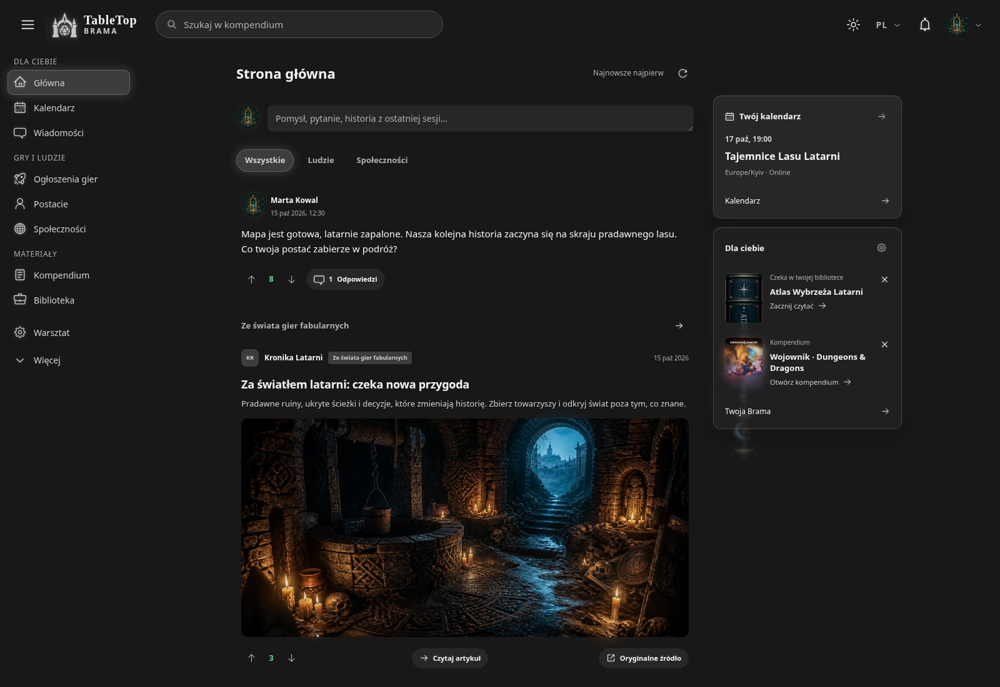
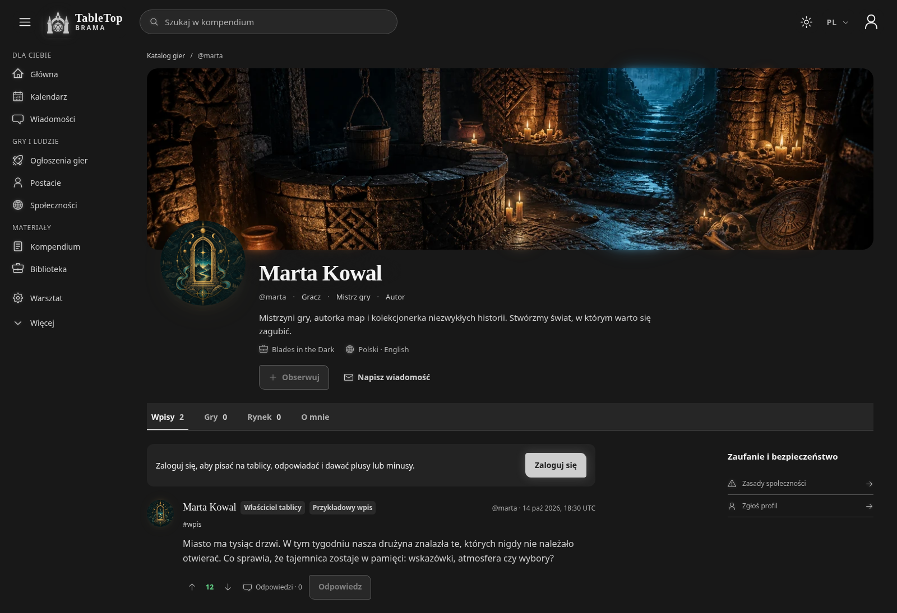
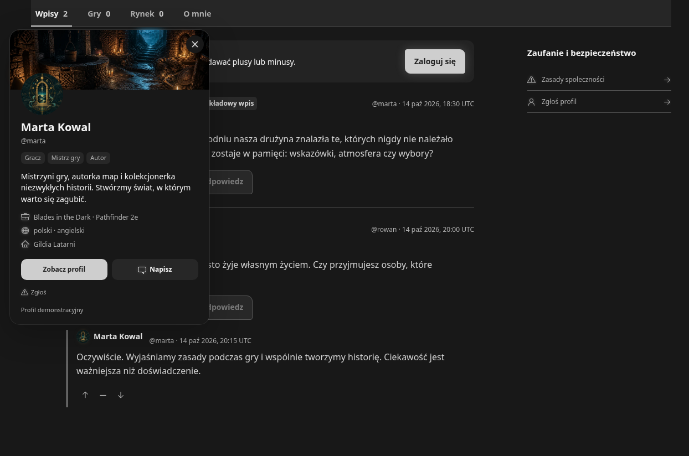
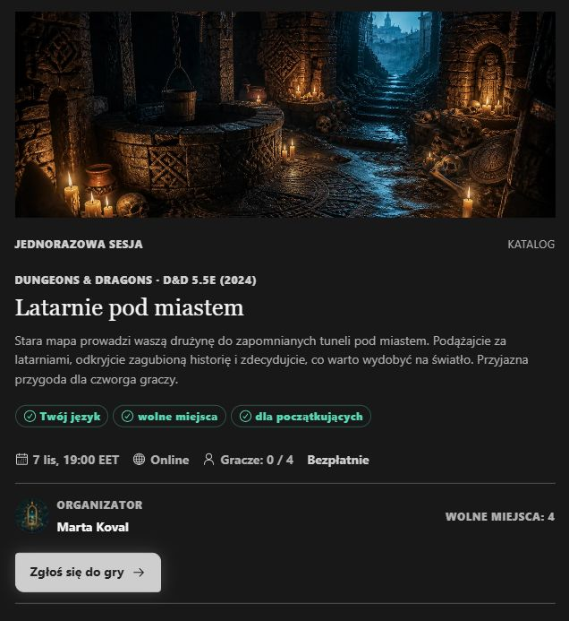
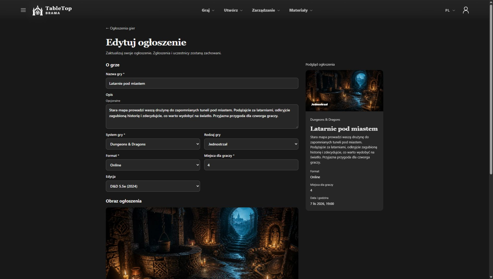
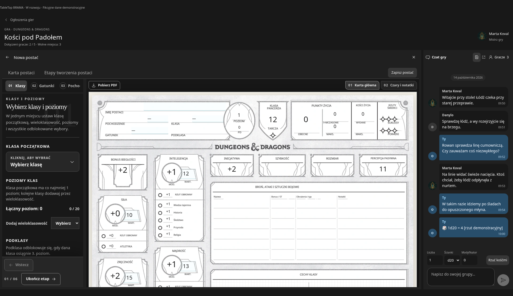
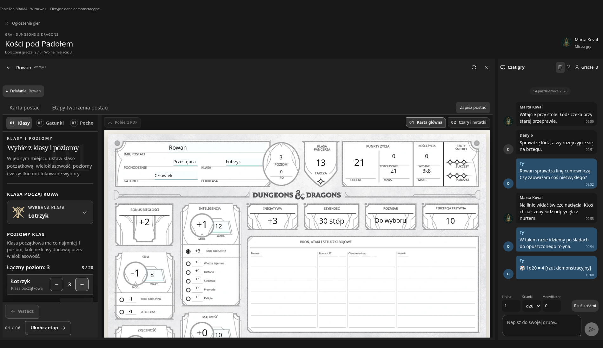
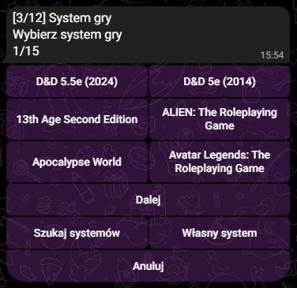
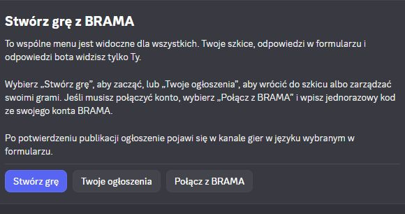

Co się zmieniło
Zaktualizowałem wygląd i profile w TableTop BRAMA. Teraz dopracowuję ogłoszenia o grach, przestrzeń do gry oraz boty Telegram/Discord obsługujące te ogłoszenia.
Dostępne są już karty profilu: kliknij imię lub awatar w komentarzach, aby zobaczyć profil, role, opis i linki danej osoby bez opuszczania strony. Przesyłanie awatarów i okładek jest też zoptymalizowane z zachowaniem animacji.
Co teraz dopracowuję:
- Ogłoszenia o grach: edycję bez utraty zgłoszeń, czytelniejszy wybór systemu i edycji oraz terminy — konkretną datę, przedział lub datę do ustalenia. Wspólny katalog dla ogłoszeń ma osobne wpisy D&D 2024 i 2014.
- Przestrzeń do gry: tworzenie postaci lub dołączanie istniejącej z biblioteki, kartę obok czatu i testy z karty we wspólnym czacie. Dopracowuję połączenia między tymi krokami.
- Boty do ogłoszeń: połączenie procesów Telegrama i Discorda z BRAMA, w tym prywatny formularz Discorda, zapisany wybór języka interfejsu i odpowiednie kanały językowe. Prace nad interfejsem botów obejmują ukraiński, angielski, polski, czeski i hiszpański.
BRAMA nadal powstaje, a strona nie jest jeszcze publiczna. Zrzuty wykorzystują fikcyjne profile i treści demonstracyjne.
Zrzuty ekranu
- Odświeżony wygląd BRAMA
- Profil demonstracyjny
- Karta profilu w dyskusji
- Ogłoszenie o sesji
- Edytor ogłoszenia
- Tworzenie postaci w grze
- Karta postaci obok czatu grupy
- Tworzenie ogłoszenia w Telegramie
- Narzędzia ogłoszeń w Discordzie
Odświeżony wygląd BRAMA
Odświeżony wygląd BRAMA: aktualności, nawigacja i multimedia w jednym miejscu.

Profil demonstracyjny
Odświeżony profil z okładką, awatarem, rolami i własną tablicą.

Karta profilu w dyskusji
Kliknij imię lub awatar, aby zobaczyć kartę profilu bez opuszczania dyskusji.

Ogłoszenie o sesji
Ilustrowane ogłoszenie z systemem, edycją, terminem, wolnymi miejscami i przyciskiem zgłoszenia. Fikcyjna sesja demonstracyjna.

Edytor ogłoszenia
Edycja przykładowego ogłoszenia z widocznym systemem, edycją, liczbą graczy i podglądem. Ten proces jest nadal dopracowywany.

Tworzenie postaci w grze
Tworzenie postaci D&D z kartą widoczną obok ustawień i czatu gry. Demonstracja powstającej platformy.

Karta postaci obok czatu grupy
Edycja postaci D&D bezpośrednio w grze. Karta i rozmowa grupy pozostają obok siebie. Fikcyjne dane demonstracyjne.

Tworzenie ogłoszenia w Telegramie
Wybór systemu w bocie Telegrama: osobne pozycje D&D 2024 i 2014, wyszukiwanie oraz opcja własnego systemu.

Narzędzia ogłoszeń w Discordzie
Menu bota Discorda do tworzenia gier, kontynuowania szkiców i łączenia z BRAMA. Odpowiedzi w formularzu i odpowiedzi bota są widoczne tylko dla osoby korzystającej z tego procesu.
